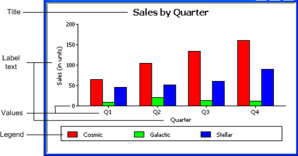
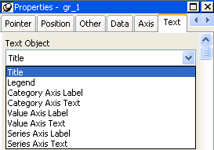
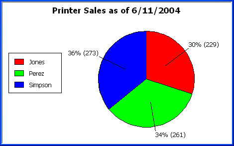
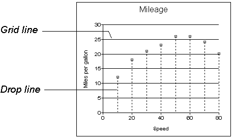

This section describes properties of a graph that are used regardless of whether the graph is in a DataWindow object or in a window. To define the properties of a graph, you use the graph's Properties view. For general information about the property pages, see "Using the graph's Properties view".
You name a graph and define its basic properties on the General property page in the graph's Properties view.
 To specify the basic properties of a graph:
To specify the basic properties of a graph:
Select Properties from the graph's pop-up menu and then select the General page in the Properties view.
As you modify a graph's properties, PowerBuilder updates the model graph shown in the Design view so that you can get an idea of the graph's basic layout:
In Preview view, PowerBuilder displays the graph with data.
You can modify graphs at runtime. To reference a graph in code, you use its name.
 To name a graph:
To name a graph:
On the General properties page for the graph, assign a meaningful name to the graph in the Name box.
The title displays at the top of the graph.
 To specify a graph's title:
To specify a graph's title:
On the General properties page for the graph, enter a title in the Title box.
 Multiline titles You can force a new line in a title by embedding ~n.
Multiline titles You can force a new line in a title by embedding ~n.
For information about specifying properties for the title text, see "Specifying text properties for titles, labels, axes, and legends".
You can change the graph type at any time in the development environment (To change the type at runtime, modify a graph's GraphType property.)
 To specify the graph type:
To specify the graph type:
On the General properties page for the graph, select a graph type from the Graph Type drop-down list.
A legend provides a key to your graph's series.
 To include a legend for a series in a graph:
To include a legend for a series in a graph:
On the General properties page for the graph, specify where you want the legend to appear by selecting a value in the Legend drop-down list.
For information on specifying text properties for the legend, see "Specifying text properties for titles, labels, axes, and legends".
You can specify the border that PowerBuilder places around a graph.
 To specify a border for a graph:
To specify a border for a graph:
On the General properties page for the graph, select the type of border to use from the Border or BorderStyle drop-down list.
If you are defining a 3D graph, you can specify the point of view that PowerBuilder uses when displaying the graph.
 To specify a 3D graph's point of view:
To specify a 3D graph's point of view:
On the General properties page for the graph, adjust the point of view along the three dimensions of the graph:
Define the depth of the graph (the percent the depth is of the width of the graph) by using the Depth slider.
You can specify how to sort the data for series and categories. By default, the data is sorted in ascending order.
 To specify how to sort the data for series and
categories in a graph:
To specify how to sort the data for series and
categories in a graph:
Select Properties from the graph's pop-up menu and then select the Axis
page in the Properties view.
Select the axis for which you want to specify sorting.
Scroll to Sort, the last option on the Axis page, and select Ascending (order), Descending (order), or Unsorted.
A graph can have four text elements:

You can specify properties for each text element.
 To specify text properties for the title, labels,
axis values, and legend of a graph:
To specify text properties for the title, labels,
axis values, and legend of a graph:
Select Properties from the graph's pop-up menu and then select the Text page in the Properties view.
Select a text element from the list in the Text Object drop-down list:

Specify the font and its characteristics.
With Auto Size in effect, PowerBuilder resizes the text appropriately whenever the graph is resized. With Auto Size disabled, you specify the font size of a text element explicitly.
 To have PowerBuilder automatically size a text element
in a graph:
To have PowerBuilder automatically size a text element
in a graph:
On the Text properties page for the graph, select a text element from the list in the Text Object drop-down list.
Select the Autosize check box (this is the default).
 To specify a font size for a text element in a
graph:
To specify a font size for a text element in a
graph:
On the Text properties page for the graph, select a text element from the list in the Text Object drop-down list.
Clear the Autosize check box.
Select the Font size in the Size drop-down list.
For all the text elements, you can specify the number of degrees by which you want to rotate the text.
 To specify rotation for a text element in a graph:
To specify rotation for a text element in a graph:
On the Text properties page for the graph, select a text element from the list in the Text Object drop-down list.
Specify the rotation you want in the Escapement box using tenths of a degree (450 means 45 degrees).
Changes you make here are shown in the model graph in the Design view and in the Preview view.
 To use a display format for a text element in
a graph:
To use a display format for a text element in
a graph:
On the Text properties page for the graph, select a text element from the list in the Text Object drop-down list.
Type a display format in the Format box or choose one from the pop-up menu. To display the pop-up menu, click the button to the right of the Format box.
You can specify an expression for the text that is used for each graph element. The expression is evaluated at execution time.
 To specify an expression for a text element in
a graph:
To specify an expression for a text element in
a graph:
On the Text properties page for the graph, select a text element from the list in the Text Object drop-down list.
Click the button next to the Display Expression box.
The Modify Expression dialog box displays.
Specify the expression.
You can paste functions, column names, and operators. Included with column names in the Columns box are statistics about the columns, such as counts and sums.
Click OK to return to the graph's Properties view.
By default, when you generate a pie graph, PowerBuilder puts the title at the top and labels each slice of the pie with the percentage each slice represents of the whole. Percentages are accurate to two decimal places.
The following graph has been enhanced as follows:

To accomplish this, the display expressions were modified for the title and pie graph labels:
With bar and column charts, you can specify the properties in Table 26-8.
 To specify overlap and spacing for the bars or
columns in a graph:
To specify overlap and spacing for the bars or
columns in a graph:
Select Properties from the graph's pop-up menu and then select the Graph tab.
Specify a percentage for Overlap (% of width) and Spacing (% of width).
Graphs have two or three axes. You specify the axes' properties in the Axis page in the graph's Properties view.
 To specify properties for an axis of a graph:
To specify properties for an axis of a graph:
Select Properties from the graph's pop-up menu and then select the Axis page in the Properties view.
Select the Category, the Value, or the Series axis from the Axis drop-down list.
If you are not working with a 3D graph, the Series Axis options are disabled.
Specify the properties as described next.
You can specify the characteristics of the text that displays for each axis. Table 26-9 shows the two kinds of text associated with an axis.
For information on specifying properties for the text, see "Specifying text properties for titles, labels, axes, and legends".
The data graphed along the Value, Category, and Series axes has an assigned datatype. The Series axis always has the datatype String. The Value and Category axes can have the datatypes listed in Table 26-10.
For graphs in DataWindow objects, PowerBuilder automatically assigns the datatypes based on the datatype of the corresponding column; you do not specify them.
For graphs in windows, you specify the datatypes yourself. Be sure you specify the appropriate datatypes so that when you populate the graph (using the AddData method), the data matches the datatype.
You can specify the properties listed in Table 26-11 to define the scaling used along numeric axes.
You can divide axes into divisions. Each division is identified by a tick mark, which is a short line that intersects an axis. In the Sales by Printer graphs shown in "Examples", the graph's Value axis is divided into major divisions of 50 units each. PowerBuilder divides the axes automatically into major divisions.
 To define divisions for an axis of a graph:
To define divisions for an axis of a graph:
To divide an axis into a specific number of major divisions, type the number of divisions you want in the MajorDivisions box.
Leave the number 0 to have PowerBuilder automatically create divisions. PowerBuilder labels each tick mark in major divisions. If you do not want each tick mark labeled, enter a value in the DisplayEveryNLabels box. For example, if you enter 2, PowerBuilder labels every second tick mark for the major divisions.
To use minor divisions, which are divisions within each major division, type the appropriate number in the MinorDivisions box. To use no minor divisions, leave the number 0.
 When using logarithmic axes If you want minor divisions, specify 1; otherwise, specify
0.
When using logarithmic axes If you want minor divisions, specify 1; otherwise, specify
0.
You can specify lines to represent the divisions as described in Table 26-12 and illustrated in Figure 26-1.

You can define line styles for the components of a graph listed in Table 26-13.
You can specify a pointer to use when the mouse is over a graph at runtime.
 To specify a pointer for a graph:
To specify a pointer for a graph:
Select Properties from the graph's pop-up menu and then select the Pointer page in the Properties view.
Select a stock pointer from the list, or select a CUR file containing a pointer.